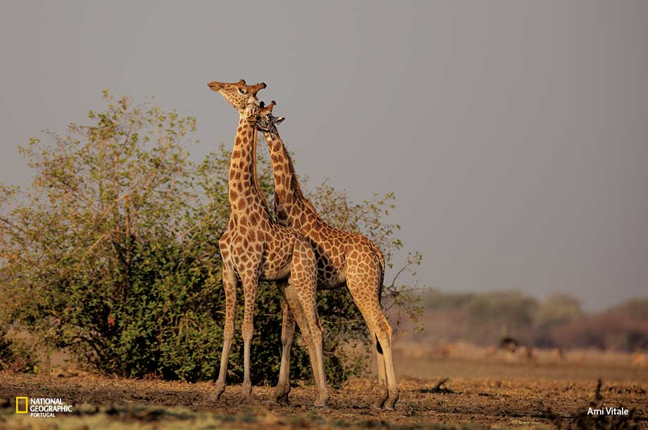

Elefantes
A Engenharia permite o desenvolvimento de tecnologias para proteção e conservação dos elefantes, como o uso de drones para monitorizar de suas populações, a criação de reservatórios de água.

Girafas
A engenharia pode ser aplicada na construção de instalações para turismo ecológico que permitam aos visitantes observar as girafas no seu habitat natural, sem prejudicar o ambiente ou a vida selvagem.
Cavalos
A engenharia pode ser utilizada em projetos de infraestrutura consideram a passagem de cavalos e éguas, como a construção de passagens de fauna em rodovias e ferrovias, para minimizar o impacto da presença humana sobre a vida selvagem.